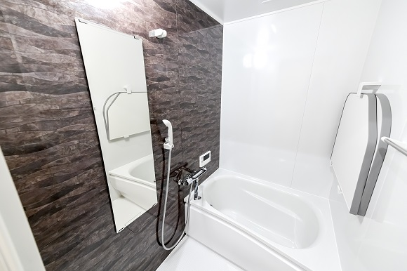
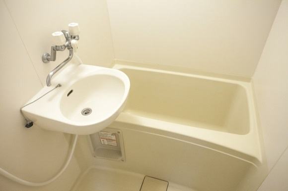
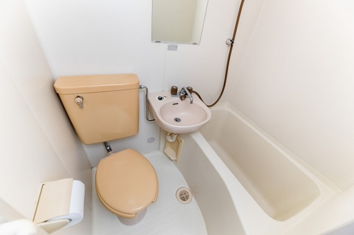

ユニットバスの種類と名称を解説【ユニットバスガイド】
ユニットバスは基本的には、工事費用など含めて１００万円近くする一般的には大きな買い物です。ユニットバスについて何も知らないまま、購入して後悔するケースも少なくありません。ユニットバスについて詳しく知ってもらい、後悔しない買い物をして頂く為にユニットバスの相場、ユニットバスの種類などについて解説していきます。
ユニットバスの価格
ユニットバスの中心価格の相場は５０～１００万円となっています。 基本的にはサイズが大きくなるほど価格は上がります。 ユニットバスの材質、シャワーの性能、ジェットバス付き、デザインなどによって、価格は相場から前後していきます。
また、工事費用は２０万～４０万前後が相場とされています。 浴室だけでなく、給排水管や給湯器の交換なども行う場合、更に価格は前後していきます。
ユニットバスとは
ユニットバスとは予め工場で天井、浴槽、床、壁などを防水性の高い素材で製造し、その後現場に搬入し、組み立てる浴室の事をいいます。
また、日本のユニットバスはサイズが決まっており、「１３１７」、「１６１６」など様々なサイズがあります。
また、浴室、トイレ、洗面台の３つが一緒になっているものだけがユニットバスと考える人も多いかもしれませんが、そうではありません。
ユニットバスは浴室のみの１点式ユニットバス。
浴室、洗面台２つが共有している２点式ユニットバス
。
浴室、トイレ、洗面台の３つが共有している３点式ユニットバスなどがあります。
ユニットバスの種類ついて
１点式ユニットバス

１点式ユニットバスとは、浴室のみが孤立し、洗面台などと共有していないユニットバスのことです。一軒家やマンションで多くつかわれいるのではないでしょうか。
メリットとしては２点式や３点式のユニットバスとは違い、広々とした空間が堪能出来るという点です。デメリットとしては、浴室の他に、洗面台やトイレが必要となるため、それらと比べてお金がかるという点です。
２点式ユニットバス

2点式ユニットバスとは、浴室と洗面台が共有しているユニットバスのことです。 一人暮らし向けの、アパートやマンションなどで、よくこの形で使われているのではないでしょうか。
メリットとしては１点式のユニットバスほどの広々として空間はありませんが、その分コストを抑えつつ、３点式よりは広い空間が堪能出来るメリットがあります。
３点式ユニットバス

３点式ユニットバスとは、浴室、洗面台、トイレが共有しているユニットバスのことです。 一人暮らし用のアパート、ビジネスホテルなどで一部使われているのではないでしょうか。
３点式ユニットバスのメリットとしては１点式、２点式と比べて、共有しているものが多いため、コストを抑える事が出来る点です。
ユニットバスの買い替え時
ユニットバスの買い替え時の３つのサイン
- 浴室内のカビが目立つ
- サビが浮いている
- 異臭が漂う
これらの症状が起こった際は買い替え、または一度点検をおススメします。
ユニットバスの平均的な寿命は１０～２０年程度といわれています。 日頃の使い方、メンテナンスの回数などによって、状況は変わりますが、上記の３点に当てはまらなくても、メンテナンスをほとんどしてこなかった場合などは一度点検などを考えてみてもいいでしょう。
まとめ
ユニットバスは基本的には、工事費用など含めて１００万円近くする一般的には大きな買い物です。今回ご紹介した、相場、種類、買い替え時などを参考にしてユニットバスを選んで頂き、後悔のないお買い物、快適な生活が遅れるようになって頂ければと思います。